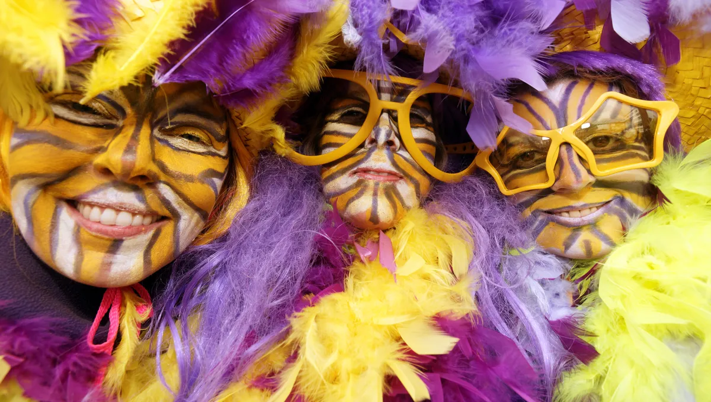
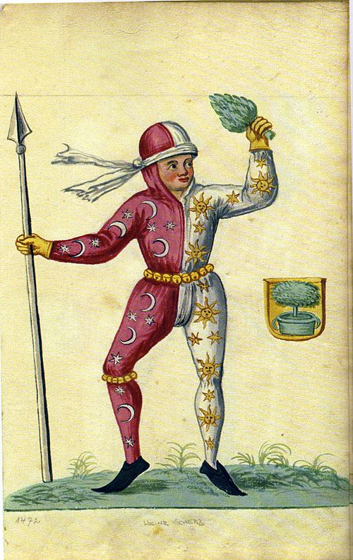
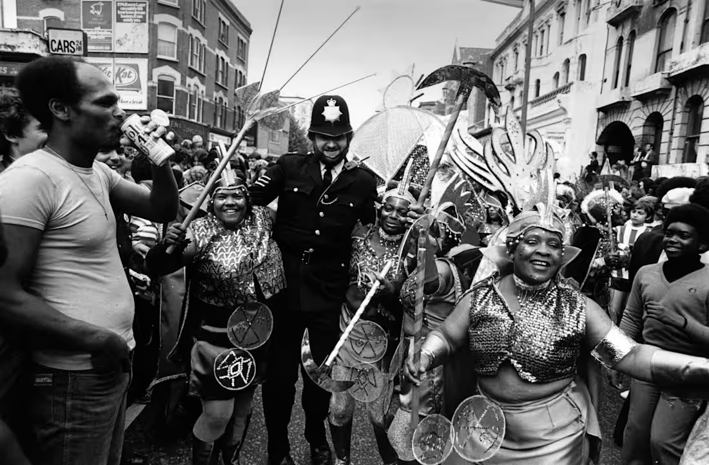

Le Carnaval

Le carnaval est un type de fête relativement répandu en Europe et en
Amérique. Il consiste en une période pendant laquelle les habitants de
la ville sortent déguisés (voire masqués ou bien maquillés) et se
retrouvent pour chanter, danser, faire de la musique dans les rues,
jeter des confettis et serpentins, défiler, éventuellement autour
d’une parade constituée de musiciens, de danseurs et de chars décorés.
Héritiers de rituels antiques tels que les Lupercales et la Guillaneu,
ils sont traditionnellement associés au calendrier chrétien et se
déroulent entre l'Épiphanie, soit le 6 janvier, et le Mardi gras avant
le mercredi des Cendres une fête mobile entre le 3 février et le 9
mars.
Histoire
Différentes hypothèses des origines de Carnaval
Les traditions de carnaval ont été apparentées à de nombreuses autres
traditions, sans pour autant établir de filiation évidente par une
continuité ininterrompue des pratiques ; les hypothèses sont plutôt
basées sur des analogies de pratiques.
Préhistoire
Plusieurs hypothèses ont été formulées quant aux origines du carnaval.
Pour le philologue Karl Meuli, la présence des masques, qui
représentent les morts, permet de rapprocher le carnaval d'une forme
préhistorique de culte des ancêtres. Le folkloriste Claude Gaignebet,
quant à lui, lie les déguisements d'ours au totémisme qui serait aussi
présent dans les peintures rupestres.
Antiquité
De nombreuses fêtes antiques ont été aussi invoquées comme ancêtre du
carnaval : c'est notamment le cas de la fête celte d'Imbolc, notamment
pour expliquer l'utilisation de soufflets ou de vessies gonflées, mais
aussi des Sacées, fêtes babyloniennes durant lesquelles un souverain
fictif était sacrifié afin de raccorder les calendriers lunaires et
solaires, les Bacchanales grecques et romaines, les Saturnales, les
Lupercales, les Kalendae de janvier, ou les fêtes d'Isis du début du
printemps, marquées par le lancement d'un « char naval ».
Moyen Âge

Au cours du Moyen Âge, les cortèges des confréries professionnelles se
muent petit à petit en carnavals urbains, par l'arrivée de pièces de
théâtre comiques qui deviennent par la suite la Commedia dell'arte.
Des hypothèses rapprochent le carnaval d'autres traditions médiévales,
telles que les fêtes des fous.
Renaissance
Laurent le Magnifique est un grand mécène du carnaval, pour lequel il
commande des chars aux thèmes mythologiques. La Renaissance est aussi
l'époque d'apparition du Carnaval dans les Antilles, apporté par les
colons européens qui en excluent les populations afrodescendantes et
esclavagisées ; celles-ci organisèrent leurs propres cérémonies qui
rencontrent depuis un grand succès.
XXe siècle

Plus généralement les années 1970 sont l'occasion de la revitalisation
des carnavals ruraux ; ces nouvelles éditions sont l'occasion de
réinventions de traditions, afin de préserver les cultures régionales
et de proposer des évènements touristiques, où le carnaval devient un
spectacle plutôt qu'un évènement auxquels tous participent. Le XXe
siècle est aussi l'époque de l'apparition des masques pour enfants.